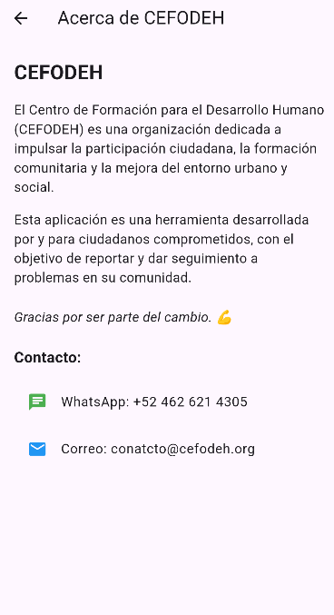

2. Installation and use
-
Clone the repository and navigate to the project folder:
git clone https://github.com/<YOUR_USERNAME>/vecino_seguro.git cd vecino_seguro -
Make sure you have Flutter
3.29.2(or higher) and Dart3.7.2installed. You can check with:
If you need to switch channels or upgrade, for example:flutter --versionflutter channel stable flutter upgrade flutter version 3.29.2 -
Install Dart/Flutter dependencies:
flutter pub get -
Make sure you have configured the file
android/app/google-services.json(for Android) andios/Runner/GoogleService-Info.plist(for iOS) with your Firebase project credentials. -
Run the application on an emulator or a real device:
(In Android Studio, open the AVD Manager, select an emulator, and press Run.)flutter run -
To build a production-ready APK:
The generated APK will be located atflutter build apk --releasebuild/app/outputs/flutter-apk/app-release.apk.
3. Main features
-
Anonymous authentication
Each user accesses the app without registering. Firebase Auth creates an anonymous user to manage read/write permissions in Firestore and Storage. -
Report creation
- Select an incident type: “Pothole,†“Streetlight,†“Trash,†“Water leak,†or “Other.â€
- Enter the location and description.
- Optionally take a photo with the camera.
-
When you tap “Send report,” the data is saved to Firestore and,
optionally, WhatsApp opens to share the incident:
https://wa.me/5214626214305?text=<encoded_text>
-
Report list
- “My reports†screen: shows all reports sorted by date.
- Status filter: “All,†“Pending,†or “Resolved.â€
- An anonymous user can delete their own reports (if enabled).
-
About CEFODEH
Displays information about the organization (CEFODEH), along with buttons to send messages via WhatsApp and email.
4. Screens and examples
4.1. Splash Screen
When you launch the app, it displays the CEFODEH logo and the text “Centro de Formación para el Desarrollo Humano” for 3 seconds.

4.2. Home
Main screen with buttons for “Create report,†“View reports,†and “About CEFODEH.â€

4.3. Create report
Form to select the incident type, enter location and description, and (optionally) take a photo.

4.4. View reports
List of reports with a status filter and an option to delete each one.

4.5. About CEFODEH
Institutional information with buttons to contact via WhatsApp and email.
5. How to contribute
If you want to help improve Vecino Seguro, follow these steps:
- Fork this repository.
-
Create a branch for your new feature or fix:
git checkout -b my-new-feature -
Make your changes, then:
git add . git commit -m "Brief description of your improvement" -
Push your branch to the remote repository:
git push origin my-new-feature - Open a Pull Request on GitHub from your branch to
mainin this repository.